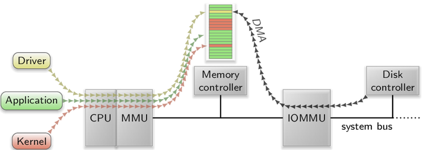

The architecture introduced in Chapter Architecture clears the way to compose sophisticated systems out of many building blocks. Each building block is represented by an individual component that resides in a dedicated protection domain and interacts with other components in a well-defined manner. Those components do not merely represent applications but all typical operating-system functionalities.
Components can come in a large variety of shape and form. Compared to a monolithic operating-system kernel, a component-based operating system challenges the system designer by enlarging the design space with the decision of the functional scope of each component and thereby the granularity of componentization. This decision depends on several factors:
The smaller a component, the lower the risk for bugs and vulnerabilities. The more rigid a component's interfaces, the smaller its attack surface becomes. Hence, the security of a complex system function can potentially be vastly improved by splitting it into a low-complexity component that encapsulates the security-critical part and a high-complexity component that is uncritical for security.
The split of functionality into multiple components introduces inter-component communication and thereby context-switch overhead. If a functionality is known to be performance critical, such a split should clearly be motivated by a benefit for security.
Componentization can be pursued to improve reusability while sometimes disregarding performance considerations at the same time. However, reusability can also be achieved by moving functionality into libraries that can easily be reused by linking them directly against library-using components. By using a dynamic linker, linking can even happen at run time, which yields the same flexibility as the use of multiple distinct components. Therefore, the split of functionality into multiple components for the sole sake of modularization has to be questioned.
Sections Device drivers, Protocol stacks, Resource multiplexers, and Runtime environments and applications aid the navigation within the componentization design space by discussing the different roles a component can play within a Genode system. This can be the role of a device driver, protocol stack, resource multiplexer, runtime environment, and that of an application. By distinguishing those roles, it becomes possible to assess the possible security implications of each individual component.
The versatility of a component-based system does not come from the existence of many components alone. Even more important is the composability of components. Components can be combined only if their interfaces match. To maximize composability, the number of interfaces throughout the system should be as low as possible, and all interfaces should be largely orthogonal to each other. Section Common session interfaces reviews Genode's common session interfaces.
Components can be used in different ways depending on their configuration and their position within the component tree. Section Component configuration explains how a component obtains and processes its configuration. Section Component composition discusses the most prominent options of composing components.
A device driver translates a device interface to a Genode session interface. Figure img/device_driver illustrates the typical role of a device driver.
|
A network device driver provides a NIC service to a single client and uses core's IO-MEM and IRQ services to interact with the physical network adaptor.
|
The device interface is defined by the device vendor and typically comprises the driving of state machines of the device, the notification of device-related events via interrupts, and the means to transfer data from and to the device. A device-driver component accesses the device interface via sessions to the core services IO_MEM, IO_PORT, and IRQ as described in Section Access to device resources (IO_MEM, IO_PORT, IRQ).
In general, a physical device cannot safely be driven by multiple users at the same time. If multiple users accessed one device concurrently, the device state would eventually become inconsistent. A device driver should not attempt to multiplex a hardware device. Instead, to keep its complexity low, it should act as a server that serves only a single client per physical device. Whereas a device driver for a simple device usually accepts only one client, a device driver for a complex device with multiple sub devices (such as a USB driver) may hand out each sub device to a different client.
A device driver should be largely void of built-in policy. If it merely translates the interface of a single device to a session interface, there is not much room for policy anyway. If, however, a device driver hands out multiple sub devices to different clients, the assignment of sub devices to clients must be subjected to a policy. In this case, the device driver should obtain policy information from its configuration as provided by the driver's parent.
There are three problems that are fundamentally important for running an operating system on modern hardware but that lie outside the scope of an ordinary device driver because they affect the platform as a whole rather than a single device. Those problems are the enumeration of devices, the discovery of interrupt routing, and the initial setup of the platform.
Modern hardware platforms are rather complex and vary a lot. For example, the devices attached to the PCI bus of a PC are usually not known at the build time of the system but need to be discovered at run time. Technically, each individual device driver could probe its respective device at the PCI bus. But in the presence of multiple drivers, this approach would hardly work. First, the configuration interface of the PCI bus is a device itself. The concurrent access to the PCI configuration interface by multiple drivers would ultimately yield undefined behaviour. Second, for being able to interact directly with the PCI configuration interface, each driver would need to carry with it the functionality to interact with PCI.
On PC platforms with multiple processors, the use of legacy interrupts as provided by the Intel 8259 programmable interrupt controller (PIC) is not suitable because there is no way to express the assignment of interrupts to CPUs. To overcome the limitations of the PIC, Intel introduced the Advanced Programmable Interrupt Controller (APIC). The APIC, however, comes with a different name space for interrupt numbers, which creates an inconsistency between the numbers provided by the PCI configuration (interrupt lines) and interrupt numbers as understood by the APIC. The assignment of legacy interrupts to APIC interrupts is provided by the Advanced Configuration and Power Interface (ACPI) tables. Consequently, in order to support multi-processor PC platforms, the operating system needs to interpret those tables. Within a component-based system, we need to answer the question of which component is responsible to interpret the ACPI tables and how this information is applied to individual device drivers.
In embedded systems, the interaction of the SoC (system on chip) with its surrounding peripheral hardware is often not fixed in hardware but rather a configuration issue. For example, the power supply and clocks of certain peripherals may be enabled by speaking an I2C protocol with a separate power-management chip. Also, the direction and polarity of the general-purpose I/O pins depends largely on the way how the SoC is used. Naturally, such hardware setup steps could be performed by the kernel. But this would require the kernel to become aware of potentially complex platform intrinsics.
The natural solution to these problems is the introduction of a so-called platform driver, which encapsulates the peculiarities outlined above. On PC platforms, the role of the platform driver is executed by the ACPI driver. The ACPI driver provides an interface to the PCI bus in the form of a PCI service. Device drivers obtain the information about PCI devices by creating a PCI session at the ACPI driver. Furthermore, the ACPI driver provides an IRQ service that transparently applies the interrupt routing based on the information provided by the ACPI tables. Furthermore, the ACPI driver provides the means to allocate DMA buffers, which is further explained in Section Direct memory access (DMA) transactions.
On ARM platforms, the corresponding component is named platform driver and provides a so-called platform service. Because of the large variety of ARM-based SoCs, the session interface for this service differs from platform to platform.
Most device drivers need to respond to sporadic events produced by the device and propagated to the CPU as interrupts. In Genode, a device-driver component obtains device interrupts via core's IRQ service introduced in Section Access to device resources (IO_MEM, IO_PORT, IRQ). On PC platforms, device drivers usually do not use core's IRQ service directly but rather use the IRQ service provided by the platform driver (Section Platform driver).
Devices that need to transfer large amounts of data usually support a means to issue data transfers from and to the system's physical memory without the active participation of the CPU. Such transfers are called direct memory access (DMA) transactions. DMA transactions relieve the CPU from actively copying data between device registers and memory, optimize the throughput of the system bus by the effective use of burst transfers, and may even be used to establish direct data paths between devices. However, the benefits of DMA come at the risk of corrupting the physical memory by misguided DMA transactions. Because those DMA-capable devices can issue bus requests that target the physical memory directly while not involving the CPU altogether, such requests are naturally not subjected to the virtual-memory mechanism implemented in the CPU in the form of a memory-management unit (MMU). Figure img/no_iommu illustrates the problem. From the device's point of view, there is just physical memory. Hence, if a driver sets up a DMA transaction, e.g., if a disk driver wants to read a block from the disk, it programs the memory-mapped registers of the device with the address and size of a physical-memory buffer where it expects to receive the data. If the driver lives in a user-level component, as is the case for a Genode-based system, it still needs to know the physical address of the DMA buffer to program the device correctly. Unfortunately, there is nothing to prevent the driver from specifying any physical address to the device. A malicious driver could misuse the device to read and manipulate all parts of the physical memory, including the kernel. Consequently, device drivers and devices should ideally be trustworthy. However, there are several scenarios where this is ultimately not the case.
When hosting virtual machines as Genode components, the direct assignment of a physical device such as a USB controller, a GPU, or a dedicated network card to the guest OS running in the virtual machine can be useful in two ways. First, if the guest OS is the sole user of the device, direct assignment of the device maximizes the I/O performance of the guest OS using the device. Second, the guest OS may be equipped with a proprietary device driver that is not present as a Genode component otherwise. In this case, the guest OS may be used as a runtime that executes the device driver, and thus, provides a driver interface to the Genode world. In both cases the guest OS should not be considered as trustworthy. On the contrary, it bears the risk of subverting the isolation between components. A misbehaving guest OS could issue DMA requests referring to the physical memory used by other components or even the kernel, and thereby break out of its virtual machine.
Modern peripherals such as wireless LAN adaptors, network cards, or GPUs employ firmware executed on the peripheral device. This firmware is executed on a microcontroller on the device, and is thereby not subjected to the policy of the normal operating system. Such firmware may either be built-in by the device vendor, or is loaded by the device driver at initialization time of the device. In both cases, the firmware tends to be a black box that remains obscure with the exception of the device vendor. Hidden functionality or vulnerabilities might be present in it. By the means of DMA transactions, such firmware has unlimited access to the system. For example, a back door implemented in the firmware of a network adaptor could look for special network packets to activate and control arbitrary spyware. Because malware embedded in the firmware of the device can neither be detected nor controlled by the operating system, both monolithic and microkernel-based operating systems are powerless against such attacks.
The previous examples misuse a DMA-capable device as a proxy to drive an attack. However, the system bus can be attacked directly with no hardware tinkering at all. There are ready-to-exploit interfaces that are featured on most PC systems. For example, most laptops come with PCMCIA / Express-Card slots, which allow expansion cards to access the system bus. Furthermore, serial bus interfaces, e.g., IEEE 1394 (Firewire), enable connected devices to indirectly access the system bus via the peripheral bus controller. If the bus controller allows the device to issue direct system bus requests by default, a connected device becomes able to gain control over the whole system.
Direct memory access (DMA) of devices looks like the Achilles heel of component-based operating systems. The most compelling argument in favor of componentization is that by encapsulating each system component within a dedicated user-level address space, the system as a whole becomes more robust and secure compared to a monolithic operating-system kernel. In the event that one component fails due to a bug or an attack, other components remain unaffected. The prime example for such buggy components are, however, device drivers. By empirical evidence, those remain the most prominent trouble makers in today's operating systems, which suggests that the DMA loophole renders the approach of component-based systems largely ineffective. However, there are three counter arguments to this observation.
|  |
|
An IOMMU arbitrates and virtualizes DMA accesses issued by a device to the RAM. Only if a valid IOMMU mapping exists for a given DMA access, the memory access is performed.
|
First, by encapsulating each driver in a dedicated address space, classes of bugs that are unrelated to DMA remain confined in the driver component. In practice most driver-related problems stem from issues like memory leaks, synchronization problems, deadlocks, flawed driver logic, wrong state machines, or incorrect device-initialization sequences. For those classes of problems, the benefits of isolating the driver in a dedicated component still apply.
Second, executing a driver largely isolated from other operating-system code minimizes the attack surface onto the driver. If the driver interface is rigidly small and well-defined, it is hard to compromise the driver by exploiting its interface.
Third, modern PC hardware has closed the DMA loophole by incorporating so-called IOMMUs into the system. As depicted in Figure img/iommu, the IOMMU sits between the physical memory and the system bus where the devices are attached to. So each DMA request has to go through the IOMMU, which is not only able to arbitrate the access of DMA requests to the RAM but is also able to virtualize the address space per device. Similar to how an MMU confines each process running on the CPU within a distinct virtual address space, the IOMMU is able to confine each device within a dedicated virtual address space. To tell the different devices apart, the IOMMU uses the PCI device's bus-device-function triplet as unique identification.
With an IOMMU in place, the operating system can effectively limit the scope of actions the given device can execute on the system. I.e., by restricting all accesses originating from a particular PCI device to the DMA buffers used for the communication, the operating system becomes able to detect and prevent any unintended bus accesses initiated by the device.
When executed on the NOVA kernel, Genode subjects all DMA transactions to the IOMMU, if present. Section IOMMU support discusses the use of IOMMUs in more depth.
|
Example of a protocol stack. The terminal provides the translation between the terminal-session interface (on the right) and the driver interfaces (on the left).
|
A protocol stack translates one session interface to another (or the same) session interface. For example, a terminal component may provide a command-line application with a service for obtaining textual user input and for printing text. To implement this service, the terminal uses an input session and a framebuffer session. Figure img/protocol_stack depicts the relationship between the terminal, its client application, and the used drivers. For realizing the output of a stream of characters on screen, it implements a parser for escape sequences, maintains a state machine for the virtual terminal, and renders the pixel representation of characters onto the framebuffer. For the provisioning of textual user input, it responds to key presses reported by the input session, maintains the state of modifier keys, and applies a keyboard layout to the stream of incoming events. When viewed from the outside of the component, the terminal translates a terminal session to a framebuffer session as well as an input session.
Similar to a device driver, a protocol stack typically serves a single client. In contrast to device drivers, however, protocol stacks are not bound to physical devices. Therefore, a protocol stack can be instantiated any number of times. For example, if multiple terminals are needed, one terminal component could be instantiated per terminal. Because each terminal uses an independent instance of the protocol stack, a bug in the protocol stack of one terminal does not affect any other terminal. However complex the implementation of the protocol stack may be, it is not prone to leaking information to another terminal because it is connected to a single client only. The leakage of information is constrained to interfaces used by the individual instance. Hence, in cases like this, the protocol-stack component is suitable for hosting highly complex untrusted code if such code cannot be avoided.
Note that the example above cannot be generalized for all protocol stacks. There are protocol stacks that are critical for the confidentiality of information. For example, an in-band encryption component may translate plain-text network traffic to encrypted network traffic designated to be transported over a public network. Even though the component is a protocol stack, it may still be prone to leaking unencrypted information to the public network.
Whereas protocol stacks are not necessarily critical for integrity and confidentiality, they are almost universally critical for availability.
|
A GUI server multiplexes the physical framebuffer and input devices among multiple applications.
|
A resource multiplexer transforms one resource into a number of virtual resources. A resource is typically a session to a device driver. For example, a NIC-switch component may use one NIC session to a NIC driver as uplink and, in turn, provide a NIC service where each session represents a virtual NIC. Another example is a GUI server as depicted in Figure img/resource_multiplexer, which enables multiple applications to share the same physical framebuffer and input devices by presenting each client in a window or a virtual console.
In contrast to a typical device driver or protocol stack that serves only a single client, a resource multiplexer is shared by potentially many clients. In the presence of untrusted clients besides security-critical clients, a resource multiplexer ultimately becomes a so-called multi-level component. This term denotes that the component is cross-cutting the security levels of all its clients. This has the following ramifications.
Because the component is a shared resource that is accessed by clients of different security levels, it must maintain the strict isolation between its clients unless explicitly configured otherwise. Hence, the component's client interface as well as the internal structure must be designed to prevent the leakage of information across clients. I.e., two clients must never share the same namespace of server-side objects if such a namespace can be modified by the clients. For example, a window server that hands out global window IDs to its clients is prone to unintended information leakage because one client could observe the allocation of window IDs by another client. The ID allocation could be misused as a covert channel that circumvents security policies. In the same line, a resource multiplexer is prone to timing channels if the operations provided via its client interface depends on the behavior of other clients. For this reason, blocking RPC calls should be avoided because the duration of a blocking operation may reveal information about the internal state such as the presence of other clients of the resource multiplexer.
As a resource multiplexer is shared by clients of different security levels, the same considerations apply as for the OS kernel: high complexity poses a major risk for bugs. Such bugs may, in turn, result in the unintended flow of information between clients or degrade the quality of service for all clients. Hence, in terms of complexity, resource multiplexers must be as simple as possible.
The exposure of a resource multiplexer to untrusted and even malicious clients makes it a potential target for denial-of-service attacks. Some operations provided by the resource multiplexer may require the allocation of memory. For example, a GUI server may need memory for the book keeping of each window created by its clients. If the resource multiplexer performed such allocations from its own memory budget, a malicious client could trigger the exhaustion of server-side memory by creating new windows in an infinite loop. To mitigate this category of problems, a resource multiplexer should perform memory allocations exclusively from client-provided resources, i.e., using the session quota as provided by each client at session-creation time. Section Resource trading describes Genode's resource-trading mechanism in detail. In particular, resource multiplexers should employ heap partitioning as explained in Section Component-local heap partitioning.
A resource multiplexer can be understood as a microkernel for a higher-level resource. Whereas a microkernel multiplexes or arbitrates the CPU and memory between multiple components, a resource multiplexer does the same for sessions. Hence, the principles for constructing microkernels equally apply for resource multiplexers. In the line of those principles, a resource multiplexer should ideally implement sole mechanisms but should be void of built-in policy.
Instead of providing a built-in policy, a resource multiplexer obtains policy information from its configuration as supplied by its parent. The resource multiplexer must enforce the given policy. Otherwise, the security policy expressed in the configuration remains ineffective.
The component types discussed in the previous sections have in common that they deliberately lack built-in policy but act according to a policy supplied by their respective parents by the means of configuration. This raises the question where those policies should come from. The answer comes in the form of runtime environments and applications.
|
A runtime environment manages multiple child components.
|
A runtime environment as depicted in Figure img/runtime_environment is a component that hosts child components. As explained in the Sections Recursive system structure and Resource trading, it is thereby able to exercise control over its children but is also responsible to manage the children's resources. A runtime environment controls its children in three ways:
It is up to the runtime environment to decide how to route session requests originating from a child. The routing of sessions is discussed in Section Services and sessions.
Each child obtains its configuration from its parent in the form of a ROM session as described in Section Component configuration. Using this mechanism, the runtime environment is able to feed policy information to its children. Of course, in order to make the policy effective, the respective child has to interpret and enforce the configuration accordingly.
The lifetime of a child ultimately depends on its parent. Hence, a runtime environment can destroy and possibly restart child components at any time.
With regard to the management of child resources, a runtime environment can employ a large variety of policies using two principal approaches:
Using the resource-trading mechanisms introduced in Section Resource trading, the runtime environment can assign resources to each child individually. Moreover, if a child supports the dynamic rebalancing protocol described in Section Dynamic resource balancing, the runtime environment may even change those assignments over the lifetime of its children.
Because the runtime environment controls the session routing of each child, it is principally able to interpose the child's use of any service including those normally provided by core such as PD (Section Protection domains (PD)), and CPU (Section Processing-time allocation (CPU)). The runtime environment may provide a locally implemented version of those session interfaces instead of routing session requests directly towards the core component. Internally, each session of such a local service may create a session to the real core service, thereby effectively wrapping core's sessions. This way, the runtime environment can not only observe the interaction of its child with core services but also implement custom resource-management strategies, for example, sharing one single budget among multiple children.
Canonical examples of runtime environments are the init component that applies a policy according to its configuration, the noux runtime that presents itself as a Unix kernel to its children, a debugger that interposes all core services for the debugging target, or a virtual machine monitor.
A typical application is a leaf node in the component tree that merely uses services. In practice, however, the boundary between applications and runtime environments can be blurry. As illustrated in Section Component composition, Genode fosters the internal split of applications into several components, thereby forming multi-component applications. From the outside, such a multi-component application appears as a leaf node of the component tree but internally, it employs an additional level of componentization by executing portions of its functionality in separate child components. The primary incentive behind this approach is the sandboxing of untrusted application functionality. For example, a video player may execute the video codec within a separate child component so that a bug in the complex video codec will not compromise the entire video-player application.
The core services described in Section Core - the root of the component tree principally enable the creation of a recursively structured system. However, their scope is limited to the few low-level resources provided by core, namely processing time, memory, and low-level device resources. Device drivers (Section Device drivers) and protocol stacks (Section Protocol stacks) transform those low-level resources into higher-level resources. Analogously to how core's low-level resources are represented by the session interfaces of core's services, higher-level resources are represented by the session interfaces provided by device drivers and protocol stacks. In principle, each device driver could introduce a custom session interface representing the particular device. But as discussed in the introduction of Chapter Components, a low number of orthogonal session interfaces is desirable to maximize the composability of components. This section introduces the common session interfaces that are used throughout Genode.
The ROM session interface makes a piece of data in the form of a dataspace available to the client.
At session-creation time, the client specifies the name of a ROM module as session argument. One server may hand out different ROM modules depending on the name specified. Once a ROM session has been created, the client can request the capability of the dataspace that contains the ROM module. Using this capability and the region map of the client's PD session, the client can attach the ROM module to its local address space and thereby access the information. The client is expected to merely read the data, hence the name of the interface.
In contrast to the intuitive assumption that read-only data is immutable, ROM modules may mutate during the lifetime of the session. The server may update the content of the ROM module with new versions. However, the server does not do so without the consent of the client. The protocol between client and server consists of the following steps.
The client registers a signal handler at the server to indicate that it is interested in receiving updates of the ROM module.
If the server has a new version of the ROM module, it does not immediately change the dataspace shared with the client. Instead, it maintains the new version separately and informs the client by submitting a signal to the client's signal handler.
The client continues working with the original version of the dataspace. Once it receives the signal from the server, it may decide to update the dataspace by calling the update function at the server.
The server responds to the update request. If the new version fits into the existing dataspace, the server copies the content of the new version into the existing dataspace and returns this condition with the reply of the update call. Thereby, the ROM session interface employs synchronous bulk transfers as described in Section Synchronous bulk transfer.
The client evaluates the result of the update call. If the new version did fit into the existing dataspace, the update is complete at this point. However, if the new version is larger than the existing dataspace, the client requests a new dataspace from the server.
Upon reception of the dataspace request, the server destroys the original dataspace (thereby making it invisible to the client), and returns the new version of the ROM module as a freshly allocated dataspace.
The client attaches the new dataspace capability to its local address space to access the new version.
The protocol is designed in such a way that neither the client nor the server need to support updates. A server with no support for updating ROM modules such as core's ROM service simply ignores the registration of a signal handler by a client. A client that is not able to cope with ROM-module updates never requests the dataspace twice.
However, if both client and server support the update protocol, the ROM session interface provides a means to propagate large state changes from the server to the client in a transactional way. In the common case where the new version of a ROM module fits into the same dataspace as the old version, the update does not require any memory mappings to be changed.
The ROM session interface is used wherever data shall be accessed in a memory mapped fashion.
Boot time data comes in the form of the ROM sessions provided by core's ROM service. On some kernels, core exports kernel-specific information such as the kernel version in the form of special ROM modules.
If an executable binary is provided as a ROM module, the binary's text segment can be attached directly to the address space of a new process (Section Component creation). So multiple instances of the same component effectively share the same text segment. The same holds true for shared libraries. For this reason, executable binaries and shared libraries are requested in the form of ROM sessions.
Components obtain their configuration by requesting a ROM session for the "config" ROM module at their respective parent (Section Component configuration). This way, configuration information can be propagated using a simple interface with no need for a file system. Furthermore, the update mechanism allows the parent to dynamically change the configuration of a component during its lifetime.
As described in Section Publishing and subscribing, multi-component applications may obtain data models in the form of ROM sessions. In such scenarios, the ROM session's update mechanism is used to propagate model updates in a transactional way.
The report session interface allows a client to report its internal state to the outside using synchronous bulk transfers (Section Synchronous bulk transfer).
At session-creation time, the client specifies a label and a buffer size. The label aids the routing of the session request but may also be used to select a policy at the report server. The buffer size determines the size of the dataspace shared between the report server and its client.
Components may use report sessions to export their internal state for monitoring purposes or for propagating exceptional events.
Device drivers may report information about detected devices or other resources. For example, a bus driver may report a list of devices attached on the bus, or a wireless driver may report the list of available networks.
In multi-component applications, components that provide data models to other components may use the report-session interface to propagate model updates.
The terminal session interface provides a bi-directional communication channel between client and server using synchronous bulk transfers (Section Synchronous bulk transfer). It is primarily meant to be used for textual interfaces but may also be used to transfer other serial streams of data.
The interface uses the two RPC functions read and write to arbitrate the access to a shared-memory communication buffer between client and server as described in Section Synchronous bulk transfer. The read function never blocks. When called, it copies new input into the communication buffer and returns the number of new characters. If there is no new input, it returns 0. To avoid the need to poll for new input at the client side, the client can register a signal handler that gets notified upon the arrival of new input. The write function takes the number of to-be-written characters as argument. The server responds to this function by processing the specified amount of characters from the communication buffer.
Besides the actual read and write operations, the terminal supports the querying of the number of new available input events (without reading it) and the terminal size in rows and columns.
At session-creation time, the terminal session may not be ready to use. For example, a TCP terminal session needs an established TCP connection first. In such a situation, the use of the terminal session by a particular client must be deferred until the session becomes ready. Delaying the session creation at the server side is not an option because this would render the server's entry point unavailable for all other clients until the TCP connection is ready. Instead, the client blocks until the server delivers a connected signal. This signal is emitted when the session becomes ready to use. The client waits for this signal right after creating the session.
Device drivers that provide streams of characters in either direction.
A graphical terminal.
Transfer of streams of data over TCP (using the TCP terminal).
Writing streams of data to a file (using a file terminal).
User input and output of traditional command-line based software, i.e., programs executed in the noux runtime environment.
Multiplexing of multiple textual user interfaces (using the terminal-mux component).
Headless operation and management of subsystems (using the CLI monitor).
The UART session interface complements the terminal session interface with additional control functions, e.g., for setting the baud rate. Because UART sessions are compatible to terminal sessions, a UART device driver can be used as both UART server and terminal server.
The input session interface is used to communicate low-level user-input events from the server to the client using synchronous bulk transfers (Section Synchronous bulk transfer). Such an event can be of one of the following types:
of a button or key. Each physical button (such as a mouse button) or key (such as a key on a keyboard) is represented by a unique value. At the input-session level, key events are reported as raw hardware events. They are reported without a keyboard layout applied and without any interpretation of meta keys (like shift, alt, and control). This gives the client the flexibility to handle arbitrary combinations of keys.
of pointer devices such as a mouse. Such events are generated by device drivers.
of pointer devices such as a touch screen or graphics tablet. Furthermore absolute motion events are generated by virtual input devices such as the input session provided by a GUI server.
of scroll wheels in vertical and horizontal directions.
of the session. Focus events are artificially generated by servers to indicate a gained or lost keyboard focus of the client. The client may respond to such an event by changing its graphical representation accordingly.
of the pointer position. Leave events are artificially generated by servers to indicate a lost pointer focus.
associated with a pressed key. This type of event is usually not generated by low-level device drivers but by a higher-level service - like the input-filer component - that applies keyboard-layout rules to sequences of low-level events. Each character event encodes a single UTF-8 symbol, which is ready to be consumed by components that operate on textual input rather than low-level hardware events.
Drivers for user-input devices play the roles of input servers.
Providing user input from a GUI server to its clients, e.g., the interface of the nitpicker GUI server provides an input session as part of the server's interface.
Merging multiple streams of user input into one stream (using an input merger).
Virtual input devices can be realized as input servers that generate artificial input events.
The framebuffer session interface allows a client to supply pixel data to a framebuffer server such as a framebuffer driver or a virtual framebuffer provided by a GUI server. The client obtains access to the framebuffer as a dataspace, which is shared between client and server. The client may update the pixels within the dataspace at any time. Once a part of the framebuffer has been updated, the client informs the server by calling a refresh RPC function. Thereby, the framebuffer session interface employs a synchronous bulk transfer mechanism (Section Synchronous bulk transfer).
In general, the screen mode is defined by the framebuffer server, not the client. The mode may be constrained by the physical capabilities of the hardware or depend on the driver configuration. Some framebuffer servers, however, may take a suggestion by the client into account. At session-creation time, the client may specify a preferred mode as session argument. Once the session is constructed, however, the client must request the actually used mode via the mode RPC function.
The session interface supports dynamic screen-mode changes during the lifetime of the session using the following protocol:
The client may register a signal handler using the mode_sigh RPC function. This handler gets notified in the event of server-side mode changes.
Similarly to the transactional protocol used for updating ROM modules (Section Read-only memory (ROM)), the dataspace shared between client and server stays intact until the client acknowledges the mode change by calling the mode RPC function.
The server responds to the mode function by applying the new mode and returns the corresponding mode information to the client. This step may destroy the old framebuffer dataspace.
The client requests a new version of the frambuffer dataspace by calling the dataspace RPC function and attaches the dataspace to its local address space. Note that each subsequent call of the dataspace RPC function may result in the replacement of the existing dataspace by a new dataspace. Hence, calling dataspace twice may invalidate the dataspace returned from the first call.
To enable framebuffer clients to synchronize their operations with the display frequency, a client can register a handler for receiving display-synchronization events as asynchronous notifications (Section Asynchronous notifications).
Framebuffer device drivers are represented as framebuffer servers.
A virtual framebuffer may provide both the framebuffer and input session interfaces by presenting a window on screen. The resizing of the window may be reflected to the client as screen-mode changes.
A filter component requests a framebuffer session and, in turn, provides a framebuffer session to a client. This way, pixel transformations can be applied to pixels produced by a client without extending the client.
|
A nitpicker session aggregates a framebuffer session, an input session, and a session-local view stack.
|
The nitpicker session interface combines an input session and a framebuffer session into a single session (Figure img/nitpicker_session). Furthermore, it supplements the framebuffer session with the notion of views, which allows the creation of flexible multi-window user interfaces. The interface is generally suited for resource multiplexers of the framebuffer and input sessions. A view is a rectangular area on screen that displays a portion of the client's virtual framebuffer. The position, size, and viewport of each view is defined by the client. Views can overlap, thereby creating a view stack. The stacking order of the views of one client can be freely defined by the client.
The size of the virtual framebuffer can be freely defined by the client but the required backing store must be provided in the form of session quota. Clients may request the screen mode of the physical framebuffer and are able to register a signal handler for mode changes of the physical framebuffer. This way, nitpicker clients are able to adapt themselves to changing screen resolutions.
The nitpicker GUI server allows multiple GUI applications to share a pair of a physical framebuffer session and an input session in a secure way.
A window manager implementing the nitpicker session interface may represent each view as a window with window decorations and a placement policy. The resizing of a window by the user is reflected to the client as a screen-mode change.
A loader (Section Loader) virtualizes the nitpicker session interface for the loaded subsystem.
The platform session interface (on ARM-based devices) and the PCI session interface (on x86-based machines) provide the client with access to the devices present on the hardware platform. See Section Platform driver for more information on the role of platform drivers.
The block session interface allows a client to access a storage server at the block level. The interface is based on a packet stream (Section Asynchronous bulk transfer - packet streams). Each packet represents a block-access command, which can be either read or write. Thanks to the use of the packet-stream mechanism, the client can issue multiple commands at once and thereby hide access latencies by submitting batches of block requests. The server acknowledges each packet after completing the corresponding block-command operation.
The packet-stream interface for submitting commands is complemented by the info RPC function for querying the properties of the block device, i.e., the supported operations, the block size, and the block count. Furthermore, a client can call the sync RPC function to flush caches at the block server.
At session-creation time, the client can dimension the size of the communication buffer as session argument. The server allocates the shared communication buffer from the session quota.
Block-device drivers implement the block-session interface.
The part-block component requests a single block session, parses a partition table, and hands out each partition as a separate block session to its clients. There can be one client for each partition.
File-system servers use block sessions as their back end.
The regulator session represents an adjustable value in the hardware platform. Examples are runtime-configurable frequencies and voltages. The interface is a plain RPC interface.
The timer session interface provides a client with a session-local time source. A client can use it to schedule timeouts that are delivered as signals to a previously registered signal handler. Furthermore, the client can request the elapsed number of milliseconds since the creation of the timer session.
A NIC session represents a network interface that operates at network-packet level. Each session employs two independent packet streams (Section Asynchronous bulk transfer - packet streams), one for receiving network packets and one for transmitting network packets. Furthermore, the client can query the MAC address of the network interface.
At session-creation time, the communication buffers of both packet streams are dimensioned via session arguments. The communication buffers are allocated by the server using the session quota provided by the client.
Network drivers are represented as NIC servers.
A NIC switch uses one NIC session connected to a NIC driver, and provides multiple virtual NIC interfaces to its clients by managing a custom name space of virtual MAC addresses.
A TCP/IP stack uses a NIC session as back end.
The audio output interface allows for the transfer of audio data from the client to the server. One session corresponds to one channel. I.e., for stereo output, two audio-out sessions are required.
At session-construction time, the client specifies the type of channel (e.g., front left) as session argument.
For the output of streamed audio data, a codec typically decodes a relatively large portion of an audio stream and submits the sample data to a mixer. The mixer, in turn, mixes the samples of multiple sources and forwards the result to the audio driver. The codec, the mixer, and the audio driver are separate components. By using large buffer sizes between them, there is only very little context-switching overhead. Also, the driver can submit large buffers of sample data to the sound device without any further intervention needed. In contrast, sporadic sounds are used to inform the user about an immediate event. An example is the acoustic feedback to certain user input in games. The user ultimately expects that such sounds are played back without much latency. Otherwise the interactive experience would suffer. Hence, using large buffers between the audio source, the mixer, and the driver is not an option. The audio-out session interface was specifically designed to accommodate both corner cases of audio output.
|
The time-driven audio-out session interface uses shared memory to transfer audio frames and propagate progress information.
|
Similarly to the packet-stream mechanism described in Section Asynchronous bulk transfer - packet streams, the audio-out session interface depicted in Figure img/audio_out_session employs a combination of shared memory and asynchronous notifications. However, in contrast to the packet-stream mechanism, it has no notion of ownership of packets. When using the normal packet-stream protocol, either the source or the sink is in charge of handling a given packet at a given time, not both. The audio-out session interface weakens this notion of ownership by letting the source update once submitted audio frames even after submitting them. If there are solely continuous streams of audio arriving at the mixer, the mixer can mix those large batches of audio samples at once and pass the result to the driver.
|
The mixer processes batches of incoming audio frames from multiple sources.
|
Now, if a sporadic sound comes in, the mixer checks the current output position reported by the audio driver, and re-mixes those portions that haven't been played back yet by incorporating the sporadic sound. So the buffer consumed by the driver gets updated with new data.
|
A sporadic occurring sound prompts the mixer to remix packets that were already submitted in the output queue.
|
Besides the way of how packets are populated with data, the second major difference to the packet-stream mechanism is its time-triggered mode of operation. The driver produces periodic signals that indicate the completeness of a played-back audio packet. This signal triggers the mixer to become active, which in turn serves as a time base for its clients. The current playback position is denoted alongside the sample data as a field in the memory buffer shared between source and sink.
The audio-out session interface is provided by audio drivers.
An audio mixer combines incoming audio streams of multiple clients into one audio stream transferred to an audio driver.
The file-system session interface provides the client with a storage facility at the file and directory-level. Compared to the block session interface (Section Block), it operates on a higher abstraction level that is suited for multiplexing the storage device among multiple clients. Similar to the block session, the file-system session employs a single packet stream interface (Section Asynchronous bulk transfer - packet streams) for issuing read and write operations. This way, read and write requests can be processed in batches and even out of order.
In contrast to read and write operations that carry potentially large amounts of payload, the directory functions provided by the file-system session interface are synchronous RPC functions. Those functions are used for opening, creating, renaming, moving, deleting, and querying files, directories and symbolic links.
The directory functions are complemented with an interface for receiving notifications upon file or directory changes using asynchronous notifications.
A file-system operates on a block session to provide file-system sessions to its clients.
A RAM file system keeps the directory structure and files in memory and provides file-system sessions to multiple clients. Each session may be restricted in different ways (such as the root directory as visible by the respective client, or the permission to write). Thereby the clients can communicate using the RAM file system as a shared storage facility but are subjected to an information-flow policy.
A file-system component may play the role of a filter that transparently encrypts the content of the files of its client and stores the encrypted files at another file-system server.
A pseudo file system may use the file-system interface as an hierarchic control interface. For example, a trace file system provides a pseudo file system as a front end to interact with core's TRACE service.
The loader session interface allows clients to dynamically create Genode subsystems to be hosted as children of a loader service. In contrast to a component that is spawning a new subsystem as an immediate child, a loader client has very limited control over the spawned subsystem. It can merely define the binaries and configuration to start, define the position where the loaded subsystem will appear on screen, and kill the subsystem. But it is not able to interfere with the operation of the subsystem during its lifetime.
At session-creation time, the client defines the amount of memory to be used for the new subsystem as session quota. Once the session is established, the client equips the loader session with ROM modules that will be presented to the loaded subsystem. From the perspective of the subsystem, those ROM modules can be requested in the form of ROM sessions from its parent.
The loaded subsystem may implement a graphical user interface by creating a nitpicker session (Section Nitpicker GUI). The loader responds to such a session request by providing a locally implemented session. The loader subordinates the nitpicker session of the loaded subsystem to a nitpicker view (called parent view) defined by the loader client. The loader client can use the loader session interface to position the view relative to the parent-view position. Thereby, the graphical user interface of the loaded subsystem can be seamlessly integrated with the user interface of the loader client.
The most illustrative use case is the execution of web-browser plugins where neither the browser trusts the plugin nor the plugin trusts the browser (Section Ceding the parenthood).
By convention, each component obtains its configuration in the form of a ROM module named "config". The ROM session for this ROM module is provided by the parent of the component. For example, for the init component, which is the immediate child of core, its "config" ROM module is provided by core's ROM service. Init, in turn, provides a different config ROM module to each of its children by a locally implemented ROM service per child.
In principle, being a mere ROM module, a component configuration can come in an arbitrary format. However, throughout Genode, there exists the convention to use XML as syntax and wrap the configuration within a <config> node. The definition of sub nodes of the configuration depends on the respective component.
Servers that serve multiple clients may apply a different policy to each client. In general, the policy may be defined by the session arguments aggregated on the route of the session request as explained in Section Services and sessions. However, in the usual case, the policy is dictated by the common parent of client and server. In this case, the parent may propagate its policy as the server's configuration and deliver a textual label as session argument for each session requested at the server. The configuration contains a list of policies whereas the session label is used as a key to select the policy from the list. For example, the following snippet configures a RAM file system with different policies.
<config> <!-- constrain sessions according to their labels --> <policy label="noux -> root" root="/" /> <policy label="noux -> home" root="/home/user" /> <policy label="noux -> tmp" root="/tmp" writeable="yes" /> </config>
Each time a session is created, the server matches the supplied session label against the configured policies. Only if a policy matches, the parameters of the matching policy come into effect. The way how the session label is matched against the policies depends on the implementation of the server. However, by convention, servers usually select the policy depending on the attributes label, label_prefix, and label_suffix. If present, the label attribute must perfectly match the session label whereby the suffix and prefix counterparts allow for partially matching the session label. If multiple <policy> nodes match at the server side, the most specific policy is selected. Exact matches are considered as most specific, prefixes as less specific, and suffixes as least specific. If multiple prefixes or suffixes match, the longest is considered as the most specific. If multiple policies have the same label, the selection is undefined. This is a configuration error.
As described in Section Read-only memory (ROM), a ROM module can be updated during the lifetime of the ROM session. This principally enables a parent to dynamically reconfigure a child component without the need to restart it. If a component supports its dynamic reconfiguration, it installs a signal handler at its "config" ROM session. Each time, the configuration changes, the component will receive a signal. It responds to such a signal by obtaining the new version of the ROM module using the steps described in Section Read-only memory (ROM) and applying the new configuration.
Genode provides a playground for combining components in many different ways. The best composition of components often depends on the goal of the system integrator. Among possible goals are the ease of use for the end user, the cost-efficient reuse of existing software, and good application performance. However, the most prominent goal is the mitigation of security risks. This section presents composition techniques that leverage Genode's architecture to dramatically reduce the trusted computing base of applications and to solve rather complicated problems in surprisingly easy ways.
The figures presented throughout this section use a simpler nomenclature than the previous sections. A component is depicted as box. Parent-child relationships are represented as light-gray arrows. A session between a client and a server is illustrated by a dashed arrow pointing to the server.
The functionality of existing applications and libraries is often worth reusing or economically downright infeasible to reimplement. Examples are PDF rendering engines, libraries that support commonly used video and audio codecs, or libraries that decode hundreds of image formats.
However, code of such rich functionality is inherently complex and must be assumed to contain security flaws. This is empirically evidenced by the never ending stream of security exploits targeting the decoders of data formats. But even in the absence of bugs, the processing of data by third-party libraries may have unintended side effects. For example, a PDF file may contain code that accesses the file system, which the user of a PDF reader may not expect. By linking such a third-party library to a security-critical application, the application's security is seemingly traded against the functional value that the library offers.
|
A video player executes the video and audio codecs inside a dedicated sandbox.
|
Fortunately, Genode's architecture principally allows every component to encapsulate untrusted functionality in child components. So instead of directly linking a third-party library to an application, the application executes the library code in a dedicated sub component. By imposing a strict session-routing policy onto the component, the untrusted code is restricted to its sandbox. Figure img/qt_avplay shows a video player as a practical example of this approach.
The video player uses the nitpicker GUI server to present a user interface with the graphical controls of the player. Furthermore, it has access to a media file containing video and audio data. Instead of linking the media-codec library (libav) directly to the video-player application, it executes the codec as a child component. Thereby the application effectively restricts the execution environment of the codec to only those resources that are needed by the codec. Those resources are the media file that is handed out to the codec as a ROM module, a facility to output video frames in the form of a framebuffer session, and a facility to output an audio stream in the form of an audio-out session.
In order to reuse as much code as possible, the video player executes an existing example application called avplay that comes with the codec library as child component. The avplay example uses libSDL as back end for video and audio output and responds to a few keyboard shortcuts for controlling the video playback such as pausing the video. Because there exists a Genode version of libSDL, avplay can be executed as a Genode component with no modifications. This version of libSDL requests a framebuffer session (Section Framebuffer) and an audio-out session (Section Audio output) to perform the video and audio output. To handle user input, libSDL opens an input session (Section Input). Furthermore, it opens a ROM session for obtaining a configuration. This configuration parametrizes the audio back end of libSDL. Because avplay is a child of the video-player application, all those session requests are directed to the application. It is entirely up to the application how to respond to those requests. For accommodating the request for a frambuffer session, the application creates a second nitpicker session, configures a virtual framebuffer, and embeds this virtual framebuffer into its GUI. It keeps the nitpicker session capability for itself and merely hands out the virtual framebuffer's session capability to avplay. For accommodating the request for the input session, it hands out a capability to a locally-implemented input session. Using this input session, it becomes able to supply artificial input events to avplay. For example, when the user clicks on the play button of the application's GUI, the application would submit a sequence of press and release events to the input sessions, which appear to avplay as the keyboard shortcut for starting the playback. To let the user adjust the audio parameters of libSDL during playback, the video-player application dynamically changes the avplay configuration using the mechanism described in Section Dynamic component reconfiguration at runtime. As a response to a configuration update, libSDL's audio back end picks up the changed configuration parameters and adjusts the audio playback accordingly.
By sandboxing avplay as a child component of the video player, a bug in the video or audio codecs can no longer compromise the application. The execution environment of avplay is tailored to the needs of the codec. In particular, it does not allow the codec to access any files or the network. In the worst case, if avplay becomes corrupted, the possible damage is restricted to producing wrong video or audio frames but a corrupted codec can neither access any of the user's data nor can it communicate to the outside world.
The sandboxing technique presented in the previous section tailors the execution environment of untrusted third-party code by applying an application-specific policy to all session requests originating from the untrusted code. However, the tailoring of the execution environment by the parent can even go a step further by providing the all-encompassing virtualization of all services used by the child, including core's services such as PD, CPU, and LOG. This way, the parent can not just tailor the execution environment of a child but completely define all aspects of the child's execution. This clears the way for introducing custom operating-system interfaces at any position within the component tree, or for monitoring the behavior of subsystems.
|
The Noux runtime provides a Unix-like interface to its children.
|
By implementing all session interfaces normally provided by core, a runtime environment becomes able to handle all low-level interactions of the child with core. This includes the allocation of memory using the PD service, the spawning and controlling of threads using the CPU service, and the management of the child's address space using the PD service.
The noux runtime illustrated in Figure img/noux is the canonical example of this approach. It appears as a Unix kernel to its children and thereby enables the use of Unix software on top of Genode. Normally, several aspects of Unix would contradict with Genode's architecture:
The Unix system-call interface supports files and sockets as first-level citizens.
There is no global virtual file system in Genode.
Any Unix process can allocate memory as needed. There is no necessity for explicit assignment of memory resources to Unix processes.
Processes are created by forking existing processes. The new process inherits the roles (in the form of open file descriptors) of the forking process.
Noux resolves these contradictions by providing the interfaces of core's low-level services alongside a custom RPC interface. By providing a custom noux session interface to its children, noux can accommodate all kinds of abstractions including the notion of files and sockets. Noux maintains a virtual file system that appears to be global among all the children of the noux instance. Since noux handles all the children's interaction with the PD service, it can hand out memory allocations from a pool of memory shared among all children. Finally, because noux observes all the interactions of each child with the PD service, it is able to replay the address-space layout of an existing process to a new process when fork is called.
Besides hosting arbitrary OS personalities as a subsystem, the interception of core's services allows for the all-encompassing monitoring of subsystems without the need for special support in the kernel. This is useful for failsafe monitoring or for user-level debugging.
|
Each Genode component is created out of basic resources provided by core.
|
As described in Section Component creation, any Genode component is created out of low-level resources in the form of sessions provided by core. Those sessions include at least a PD session, a CPU session, and a ROM session with the executable binary as depicted in Figure img/no_gdb. In addition to those low-level sessions, the component may interact with sessions provided by other components.
For debugging a component, a debugger would need a way to inspect the internal state of the component. As the complete internal state is usually known by the OS kernel only, the traditional approach to user-level debugging is the introduction of a debugging interface into the kernel. For example, Linux has the ptrace mechanism and several microkernels of the L4 family come with built-in kernel debuggers. Such a debugging interface, however, introduces security risks. Besides increasing the complexity of the kernel, access to the kernel's debugging mechanisms needs to be strictly subjected to a security policy. Otherwise any program could use those mechanisms to inspect or manipulate other programs. Most L4 kernels usually exclude debugging features in production builds altogether.
|
By intercepting all sessions to core's services, a debug monitor obtains insights into the internal state of its child component. The debug monitor, in turn, is controlled from a remote debugger.
|
In a Genode system, the component's internal state is represented in the form of core sessions. Hence, by intercepting those sessions of a child, a parent can monitor all interactions of the child with core and thereby record the child's internal state. Figure img/gdb_monitor shows a scenario where a debug monitor executes a component (debugging target) as a child while intercepting all sessions to core's services. The interception is performed by providing custom implementations of core's session interfaces as locally implemented services. Under the hood, the local services realize their functionality using actual core sessions. But by sitting in the middle between the debugging target and core, the debug monitor can observe the target's internal state including the memory content, the virtual address-space layout, and the state of all threads running inside the component. Furthermore, since the debug monitor is in possession of all the session capabilities of the debugging target, it can manipulate it in arbitrary ways. For example, it can change thread states (e.g., pausing the execution or enable single-stepping) and modify the memory content (e.g., inserting breakpoint instructions). The figure shows that those debugging features can be remotely controlled over a terminal connection.
|
The GNU debugger is executed within a dedicated noux instance, thereby providing an on-target debugging facility.
|
Using this form of component-level virtualization, a problem that used to require special kernel additions in traditional operating systems can be solved via Genode's regular interfaces. Furthermore, Figure img/on_target_gdb shows that by combining the solution with OS-level virtualization, the connection to a remote debugger can actually be routed to an on-target instance of the debugger, thereby enabling on-target debugging.
The design of Genode's fundamental services, in particular resource multiplexers, is guided by the principle of minimalism. Because such components are security critical, complexity must be avoided. Functionality is added to such components only if it cannot be provided outside the component.
However, components like the nitpicker GUI server are often confronted with feature requests. For example, users may want to move a window on screen by dragging the window's title bar. Because nitpicker has no notion of windows or title bars, such functionality is not supported. Instead, nitpicker moves the burden to implement window decorations to its clients. However, this approach sacrifices functionality that is taken for granted on modern graphical user interfaces. For example, the user may want to switch the application focus using a keyboard shortcut or perform window operations and the interactions with virtual desktops in a consistent way. If each application implemented the functionality of virtual desktops individually, the result would hardly be usable. For this reason, it is tempting to move window-management functionality into the GUI server and to accept the violation of the minimalism principle.
The nitpicker GUI server is not the only service challenged by feature requests. The problem is present even at the lowest-level services provided by core. Core's region-map mechanism is used to manage the virtual address spaces of components via their respective PD sessions. When a dataspace is attached to a region map, the region map picks a suitable virtual address range where the dataspace will be made visible in the virtual address space. The allocation strategy depends on several factors such as alignment constraints and the address range that fits best. But eventually, it is deterministic. This contradicts the common wisdom that address spaces shall be randomized. Hence core's PD service is challenged with the request for adding address-space randomization as a feature. Unfortunately, the addition of such a feature into core raises two issues. First, core would need to have a source of good random numbers. But core does not contain any device drivers where to draw entropy from. With weak entropy, the randomization might be not random enough. In this case, the pretension of a security mechanism that is actually ineffective may be worse than not having it in the first place. Second, the feature would certainly increase the complexity of core. This is acceptable for components that potentially benefit from the added feature, such as outward-facing network applications. But the complexity eventually becomes part of the TCB of all components including those that do not benefit from the feature.
The solution to those kind of problems is the enrichment of existing servers by interposing their sessions. Figure img/nitpicker_wm shows a window manager implemented as a separate component outside of nitpicker. Both the nitpicker GUI server and the window manager provide the nitpicker session interface. But the window manager enriches the semantics of the interface by adding window decorations and a window-layout policy. Under the hood, the window manager uses the real nitpicker GUI server to implement its service. From the application's point of view, the use of either service is transparent. Security-critical applications can still be routed directly to the nitpicker GUI server. So the complexity of the window manager comes into effect only for those applications that use it.
The same approach can be applied to the address-space randomization problem. A component with access to good random numbers may provide a randomized version of core's PD service. Outward-facing components can benefit from this security feature by having their PD session requests routed to this component instead of core.
When using a shell to manage subsystems, the complexity of the shell naturally becomes a security risk. A shell can be a text-command interpreter, a graphical desktop shell, a web browser that launches subsystems as plugins, or a web server that provides a remote administration interface. What all those kinds of shells have in common is that they contain an enormous amount of complexity that can be attributed to convenience. For example, a textual shell usually depends on libreadline, ncurses, or similar libraries to provide a command history and to deal with the peculiarities of virtual text terminals. A graphical desktop shell is even worse because it usually depends on a highly complex widget toolkit, not to mention using a web browser as a shell. Unfortunately, the functionality provided by these programs cannot be dismissed as it is expected by the user. But the high complexity of the convenience functions fundamentally contradicts the security-critical role of the shell as the common parent of all spawned subsystems. If the shell gets compromised, all the spawned subsystems will suffer.
|
A web browser spawns a plugin by ceding the parenthood of the plugin to the trusted loader service.
|
The risk of such convoluted shells can be mitigated by moving the parent role for the started subsystems to another component, namely a loader service. In contrast to the shell, which should be regarded as untrusted due it its complexity, the loader is a small component that is orders of magnitude less complex. Figure img/arora_plugin shows a scenario where a web browser is used as a shell to spawn a Genode subsystem. Instead of spawning the subsystem as the child of the browser, the browser creates a loader session. Using the loader-session interface described in Section Loader, it can initially import the to-be-executed subsystem into the loader session and kick off the execution of the subsystem. However, once the subsystem is running, the browser can no longer interfere with the subsystem's operation. So security-sensitive information processed within the loaded subsystem are no longer exposed to the browser. Still, the lifetime of the loaded subsystem depends on the browser. If it decides to close the loader session, the loader will destroy the corresponding subsystem.
By ceding the parenthood to a trusted component, the risks stemming from the complexity of various kinds of shells can be mitigated.
All the mechanisms for transferring data between components presented in Section Inter-component communication have in common that data is transferred in a peer-to-peer fashion. A client transfers data to a server or vice versa. However, there are situations where such a close coupling of both ends of communication is not desired. In multicast scenarios, the producer of information desires to propagate information without the need to interact (or even depend on a handshake) with each individual recipient. Specifically, a component might want to publish status information about itself that might be useful for other components. For example, a wireless-networking driver may report the list of detected wireless networks along with their respective SSIDs and reception qualities such that a GUI component can pick up the information and present it to the user. Each time, the driver detects a change in the ether, it wants to publish an updated version of the list. Such a scenario could principally be addressed by introducing a use-case-specific session interface, i.e., a "wlan-list" session. But this approach has two disadvantages.
It forces the wireless driver to play an additional server role. Instead of pushing information anytime at the discretion of the driver, the driver has to actively support the pulling of information from the wlan-list client. This is arguably more complex.
The wlan-list session interface ultimately depends on the capabilities of the driver implementation. If an alternative wireless driver is able to supplement the list with further details, the wlan-list session interface of the alternative driver might look different. As a consequence, the approach is likely to introduce many special-purpose session interfaces. This contradicts with the goal to promote the composability of components as stated at the beginning of Section Common session interfaces.
As an alternative to introducing special-purpose session interfaces for addressing the scenarios outlined above, two existing session interfaces can be combined, namely ROM and report.
The report-rom server is both a ROM service and a report service. It acts as an information broker between information providers (clients of the report service) and information consumers (clients of the ROM service).
To propagate its internal state to the outside, a component creates a report session. From the client's perspective, the posting of information via the report session's submit function is a fire-and-forget operation, similar to the submission of a signal. But in contrast to a signal, which cannot carry any payload, a report is accompanied with arbitrary data. For the example above, the wireless driver would create a report session. Each time, the list of networks changes, it would submit an updated list as a report to the report-ROM server.
The report-ROM server stores incoming reports in a database using the client's session label as key. Therefore, the wireless driver's report will end up in the database under the name of the driver component. If one component wishes to post reports of different kinds, it can do so by extending the session label by a component-provided label suffix supplied as session-construction argument (Section Report). The memory needed as the backing store for the report at the report-ROM server is accounted to the report client via the session-quota mechanism described in Section Trading memory between clients and servers.
In its role of a ROM service, the report-ROM server hands out the reports stored in its database as ROM modules. The association of reports with ROM sessions is based on the session label of the ROM client. The configuration of the report-ROM server contains a list of policies as introduced in Section Server-side policy selection. Each policy entry is accompanied with a corresponding key into the report database.
When a new report comes in, all ROM clients that are associated with the report are informed via a ROM-update signal (Section Read-only memory (ROM)). Each client can individually respond to the signal by following the ROM-module update procedure and thereby obtain the new version of the report. From the client's perspective, the origin of the information is opaque. It cannot decide whether the ROM module is provided by the report-ROM server or an arbitrary other ROM service.
Coming back to the wireless-driver example, the use of the report-ROM server effectively decouples the GUI application from the wireless driver. This has the following benefits:
The application can be developed and tested with an arbitrary ROM server supplying an artificially created list of networks.
There is no need for the introduction of a special-purpose session interface between both components.
The wireless driver can post state updates in an intuitive fire-and-forget way without playing an additional server role.
The wireless driver can be restarted without affecting the application.
The report-ROM server is a canonical example of a protocol stack (Section Protocol stacks). It performs a translation between the report-session interface and the ROM-session interface. Being a protocol stack, it can be instantiated any number of times. It is up to the system integrator whether to use one instance for gathering the reports of many report clients, or to instantiate multiple report-ROM servers. Taken to the extreme, one report-ROM server could be instantiated per report client. The routing of ROM-session requests restricts the access of the ROM clients to the different instances. Even in the event that the report-ROM server is compromised, the policy for the information flows between the producers and consumers of information stays in effect.
In the scenarios described in the previous sections, the relationships between clients and servers have been one of the following:
The client is a sibling of the server within the component tree, or
The client is a child of a parent that provides a locally-implemented service to its child.
However, the Genode architecture allows for a third option: The parent can be a client of its own child. Given the discussion in Section Client-server relationship, this arrangement looks counter-intuitive at first because the discussion concluded that a client has to trust the server with respect to the client's liveliness. Here, a call to the server would be synonymous to a call to the child. Even though the parent is the owner of the child, it would make itself dependent on the child, which is generally against the interest of the parent.
That said, there is a plausible case where the parent's trust in a child is justified: If the parent uses an existing component like a 3rd-party library. When calling code of a 3rd-party library, the caller implicitly agrees to yield control to the library and trusts the called function to return at some point. The call of a service that is provided by a child corresponds to such a library call.
By providing the option to host a server as a child component, Genode's architecture facilitates the use of arbitrary server components in a library-like fashion. Because the server performs a useful function but is owned by its client, it is called slave. An application may aggregate existing protocol-stack components as slaves without the need to incorporate the code of the protocol stacks into the application. For example, by enslaving the report-ROM server introduced in Section Publishing and subscribing, an application becomes able to use it as a local publisher-subscriber mechanism. Another example would be an application that aggregates an instance of the nitpicker GUI server for the sole purpose of composing an image out of several source images. When started, the nitpicker slave requests a framebuffer and an input session. The application responds to these requests by handing out locally-implemented sessions so that the output of the nitpicker slave becomes visible to the application. To perform the image composition, the application creates a nitpicker session for each source image and supplies the image data to the virtual framebuffer of the respective session. After configuring nitpicker views according to the desired layout of the final image, the application obtains the composed image from nitpicker's framebuffer.
Note that by calling the slave, the parent does not need to trust the slave with respect to the integrity and confidentiality of its internal state (see the discussion in Section Client-server relationship). By performing the call, only the liveliness of the parent is potentially affected. If not trusting the slave to return control once called, the parent may take special precautions: A watchdog thread inside the parent could monitor the progress of the slave and cancel the call after the expiration of a timeout.